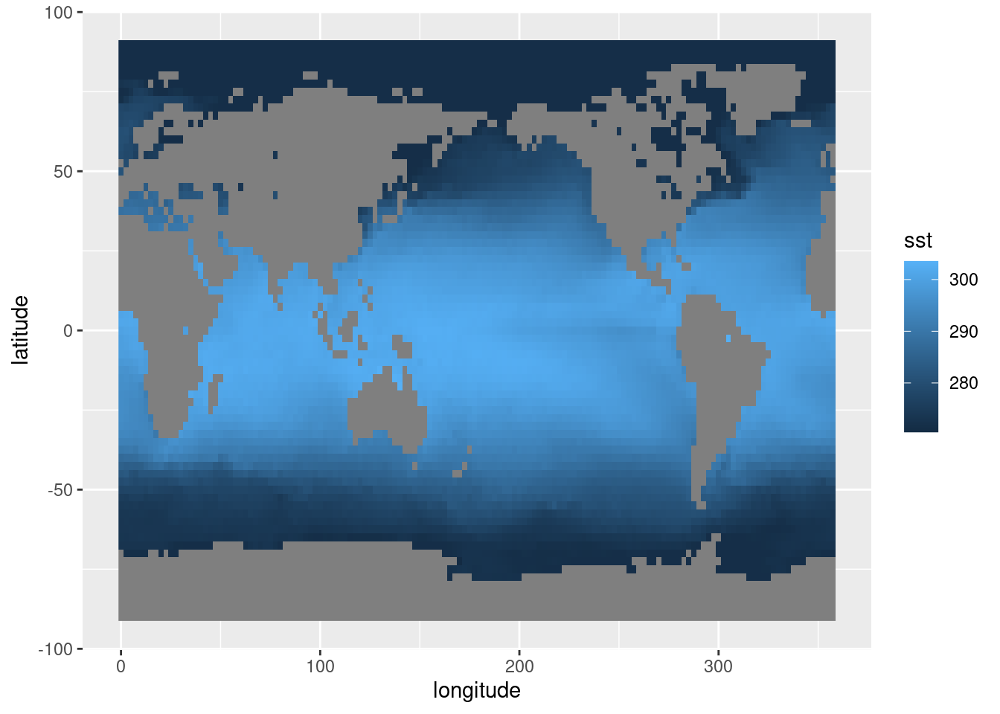

Lectura de datos
Datos en .csv, .txt, etc
Si de casualidad los datos que vas a usar están en un formato de texto o excel, podés usar cualquier función para leerlos que te resulte cómoda. Cómo siempre es importante tener presente el tipo de dato de cada columna, sobre todo si son datos desconocidos. ¿Tiene columnas con latitudes y longitudes? ¿Están en formato decimal o en grados y minutos? ¿R leyó estas columnas como número o texto?
De alguna manera este es un punto en contra para este tipo de formatos, no tienen metadatos asociados o al menos no vienen con el archivo. En la próxima sección presentaremos un tipo de archivo que si cumple con estas cosas.
Datos en netCDF
Uno de estos tipos de formatos muy utilizado en ciencias para guardar datos atmosféricos grillados es el netCDF. La página web de unidata describe al formato netCDF como:
Auto-descriptivo: Un netCDF contiene información sobre los datos que contiene
Portable: Un archivo netCDF puede ser accedido por computadoras que almacenan enteros, caracteres y números de punto flotante de forma diferente.
Escalable: Se puede acceder eficientemente a pequeños subsets de grandes bases de datos, incluso desde servidores remotos.
Anexable: Se pueden añadir nuevos datos pueden añadirse a un archivo netCDF correctamente estructurado sin copiar el conjunto de datos ni redefinir su estructura.
Compartible. Un escritor y varios lectores pueden acceder simultáneamente al mismo archivo netCDF.
Archivable. El acceso a todas las formas anteriores de datos netCDF será compatible con las versiones actuales y futuras del software.
Todo ese márketing lo que significa en la práctica es que los datos en netCDF son muy cómodos porque tienen los metadatos incluídos y porque es muy fácil leer sólo las partes necesarias. Existen muchos paquetes de R para leer (y escribir) archivos en este formato. En este tutorial vamos a usar metR.
Los datos en archivos NetCDF puede ser bastante grandes y destruir tu sesión de R si tratás de leerlos enteros en memoria. Por eso, siempre es bueno primero fijarse qué tiene un archivo nuevo. Para eso, metR tiene la función GlanceNetCDF que muestra un vistazo de los metadatos del archivo. Vamos a trabajar con un archivo en este formato que contiene datos de reanálisis del NCEP.
library(metR)
# Archivo que viene con metR
archivo <- system.file("extdata", "temperature.nc", package = "metR")
metR::GlanceNetCDF(archivo)## ----- Variables -----
## air:
## mean Daily Air temperature in degK
## Dimensions: lon by lat by level by time
##
##
## ----- Dimensions -----
## time: 1 values from 2010-07-09 to 2010-07-09
## level: 17 values from 10 to 1000 millibar
## lat: 73 values from -90 to 90 degrees_north
## lon: 144 values from 0 to 357.5 degrees_eastLa salida de esta función muestra las variables que tiene el archivo y sus dimensiones.
¿Qué información podés deducir sobre el contenido del archivo a partir de esto?
En este caso, el archivo tiene una sola variable, llamada
air que es la temperatura media en Kelvin (un archivo
netCDF puede tener muchas variables y no todas en la misma grilla). De
las dimensiones del archivo, se ve que tiene dimensiones de tiempo,
nivel, longitud y latitud. La latitud va de -90 a 90 y la longitud de 0
a 357.5, por lo que es un campo global. level es la
coordenada vertical, que va de 1000 milibares (básicamente la
superficie) a 10 millibares (la estratósfera media).
Podemos hacer la cuenta de cuántas observaciones tiene este archivo:
1*17*73*144## [1] 178704Que puede leerse sin problema.
Para leer los datos, se usa ReadNetCDF().
temperatura <- ReadNetCDF(archivo)
temperatura## time level lat lon air
## 1: 2010-07-09 1000 90 0.0 274.87
## 2: 2010-07-09 1000 90 2.5 274.87
## 3: 2010-07-09 1000 90 5.0 274.87
## 4: 2010-07-09 1000 90 7.5 274.87
## 5: 2010-07-09 1000 90 10.0 274.87
## ---
## 178700: 2010-07-09 10 -90 347.5 188.25
## 178701: 2010-07-09 10 -90 350.0 188.25
## 178702: 2010-07-09 10 -90 352.5 188.25
## 178703: 2010-07-09 10 -90 355.0 188.25
## 178704: 2010-07-09 10 -90 357.5 188.25Leyendo variables
Y ahora podemos leer sin problemas. ReadNetCDF() por
default trata de leer todas las variables, una en cada columna. Eso no
siempre es posible o deseable, porque distintas variables pueden tener
distintas dimensiones; como por ejemplo, si hay variables definidias en
2D mezcladas con variables definidas en 3D. Entonces lo que se puede
hacer es elegir qué variables leer con el argumento
vars.
Leamos primero la temperatura de la superficie del mar:
sst <- ReadNetCDF(archivo, vars = "sst")
head(sst)## time latitude longitude sst
## 1: 1979-01-01 90 0.0 271.4601
## 2: 1979-01-01 90 2.5 271.4601
## 3: 1979-01-01 90 5.0 271.4601
## 4: 1979-01-01 90 7.5 271.4601
## 5: 1979-01-01 90 10.0 271.4601
## 6: 1979-01-01 90 12.5 271.4601Lo primero que a mí me gusta hacer cuando leo los datos es mirar el
primer campo o un par de campos. Va a haber más sobre los detalles para
visualizar estos datos con ggplot2 más adelante, pero por ahora usemos
el viejo y confiable geom_raster().
# Además, cargo los paquetes necesarios
library(magrittr)
library(ggplot2)
library(dplyr)
library(data.table)data.table
sst %>%
.[time == time[1]] %>%
ggplot(aes(longitude, latitude)) +
geom_raster(aes(fill = sst)) 
dplyr
sst %>%
filter(time == time[1]) %>%
ggplot(aes(longitude, latitude)) +
geom_raster(aes(fill = sst)) 
En este gráfico ya se ven varias cosas. Se ve que hay una clara estructura de mayores temperaturas cerca del ecuador, lo cual no debería sorprender a nadie. También se ve que, como lo que estamos leyendo es la temperatura de la superficie del mar, tenemos datos faltantes sobre los continentes. Esto puede molestar un poco para algunas operaciones, ¡pero nos viene bárbaro para tener el contorno de los continentes gratis! Finalmente, notar que como las longitudes van de 0º a 360º (en vez de -180º a 180º), el mapa sale centrado en el Océano Pacífico. Esto va a haber que tenerlo en cuenta cuando sea la hora de graficar los continentes con algo mejor que bloques grises.
Leyendo regiones
Es muy común tener muchos datos en unos pocos archivos netCDF pero
necesitar sólo una parte. Por ejemplo, me voy a poner en los zapatos de
un investigador neozelandés que le interese estudiar la temperatura de
la superficie del mar cerca de Nueva Zelanda y sus islas cercanas. En
este caso, podría leer sólo una región acotada usando el argumento
subset :
ReadNetCDF(archivo, vars = "sst",
subset = list(longitude = c(100, 200),
latitude = c(0, -90))) %>%
.[time == time[1]] %>%
ggplot(aes(longitude, latitude)) +
geom_raster(aes(fill = sst)) 
El argumento subset tiene que ser una lista cuyos
elementos tienen los nombres de las dimensiones a usar para filtrar y
cada elemento es un vector cuyo rango define el bloque de datos a
leer.
En el código anterior subset es:
list(longitude = c(100, 200),
latitude = c(0, -90))Lo que significa que se van a leer los datos con latitud entre -90º y 0º, y con longitud entre 100º y 200º.
El argumento subset de ReadNetCDF() tiene
otros aces bajo la manga, como usar NA para referirse al
mínimo o al máximo valor posible en un rango a la hora de hacer un
subset o leer regiones discontinuas de datos. Todo eso se puede leer en
la ayuda: ?ReadNetCDF().